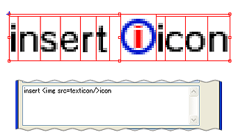

テキスト内にアイコンなど、任意の画像ファイルを挿入できます。
テキストに挿入する画像ファイルを任意のサイズで用意し、プロジェクトの{textures}フォルダに入れておきます。
編集したいテキストオブジェクトを選択しオブジェクト編集を開きます。
オブジェクト編集ウィンドウのテキスト入力エリアで画像ファイルを挿入したい場所に、カーソルを合わせます。
[マウスの右クリックメニュー]→[カーソル位置に画像を挿入]を選択します。
プロジェクト内に存在する画像ファイルがプルダウンで表示されますので、挿入したい画像ファイルをその中から選択します。
挿入する画像ファイルを選択すると、プロパティ編集のテキストエリアにタグが入力され、
テキストオブジェクトには挿入した画像が表示されます。

挿入された画像を削除するには、オブジェクト編集のテキスト入力エリア内に挿入されたタグを削除してください。
挿入された画像は、文字のボトムラインに合わせて配置されますので、縦方向の位置あわせは、挿入する元の画像で調整します。
| 文字の種類 | 大きさ |
|---|---|
| Lサイズ ＴＢＦ１_l | 高さ２１pixel： 最大幅１６ pixel： 字間１pixel |
| Mサイズ ＴＢＦ１_m |
高さ１６pixel： 最大幅１３ pixel： 字間１pixel |
| Sサイズ ＴＢＦ１_s |
高さ１３pixel： 最大幅１０ pixel： 字間1pixel |